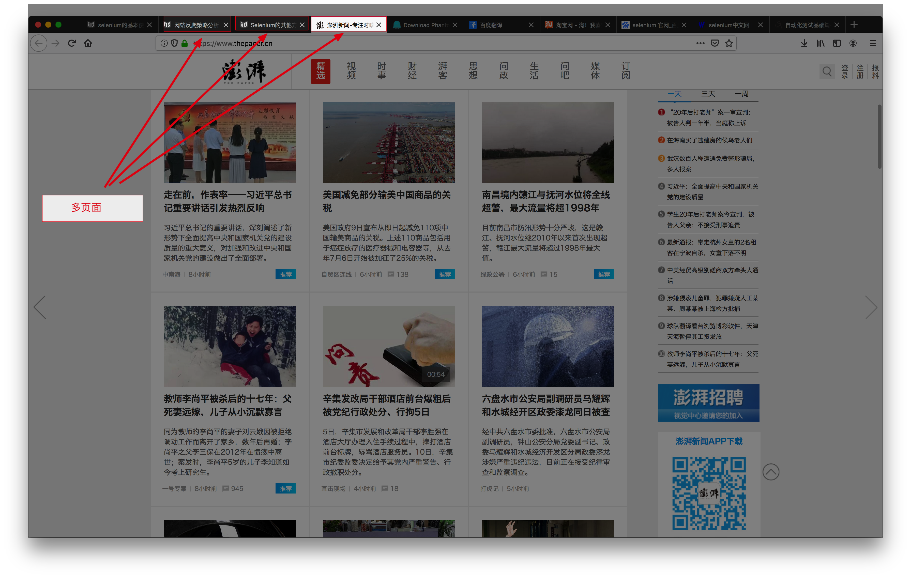

Selenium的其他方法
1. 提取标签内容、属性值
find_element仅仅能够获取元素，不能够直接获取其中的数据，如果需要获取数据需要使用以下
方法:
获取文本：
element.text获取属性值：
element.get_attribute("href")
使用示例：
import time
from selenium import webdriver
# 获取浏览器驱动对象
browser = webdriver.Chrome()
# 打开指定URL
browser.get('https://www.douban.com')
# 定位h1标签
ret = browser.find_elements_by_tag_name("h1")
print(ret[0].text)
# 输出：豆瓣
ret = browser.find_elements_by_link_text("下载豆瓣 App")
print(ret[0].get_attribute("href"))
# 输出：https://www.douban.com/doubanapp/app?channel=nimingye
time.sleep(3)
browser.quit()
2. 处理cookie
通过driver.get_cookies()能够获取所有的cookie
把cookie转化为字典
from selenium import webdriver
browser = webdriver.PhantomJS()
browser.get("http://www.baidu.com")
cookie_list = browser.get_cookies()
print(cookie_list)
# 整理为requests等需要的字典方式，因为浏览器在发送新请求时 携带的cookie只有name、value
# 所以此时提取的也只有name、value，其他的不需要
cookie_dict = {x["name"]: x["value"] for x in cookie_list}
print(cookie_dict)
删除cookie
# 删除一条cookie
browser.delete_cookie("CookieName")
# 删除所有的cookie
browser.delete_all_cookies()
添加cookie
# 添加cookie
browser.add_cookie({"name":"laowang", "email":"dong4716138@163.com"})
3. 页面等待
为什么需要等待？
如果网站采用了动态html技术，那么页面上的部分元素出现时间便不能确定，这个时候就可以设置一个等待时间，强制要求在时间内出现，否则报错
页面等待的方法
直截了当的做法
time.sleep(10)等待某个条件的做法
下面代码是获取京东网站的搜索输入框
import time from selenium import webdriver from selenium.webdriver.support.ui import WebDriverWait from selenium.webdriver.support import expected_conditions as EC from selenium.webdriver.common.by import By # 创建浏览器驱动对象 browser = webdriver.Chrome() # 创建等待操作对象 wait_ob = WebDriverWait(browser, 10) # 加载url browser.get("http://jd.com") # 等待条件到来 search_input = wait_ob.until(EC.presence_of_element_located((By.ID, 'key'))) print(search_input) # 输入内容 search_input.send_keys("Mac Pro") # 延时等待以便于观看 time.sleep(3) # 退出 browser.quit()至于其他判断条件，请参考官方网站
4. 浏览器多窗口(页面)切换
打开浏览器浏览网页时，当点击网页上某些链接时是重新打开一个新标签页面，对于这种情况，想在新页面上操作，就得先切换窗口了。
获取窗口的唯一标识用句柄表示，所以只需要切换句柄，就能在多个页面上灵活自如的操作

多窗口切换可以使用window_handles方法来获取每个窗口的操作对象。例如：
from selenium import webdriver
browser = webdriver.Chrome()
browser.get("http://jd.com")
browser.execute_script("window.open('http://ganji.com')") # 打开多个窗口
print(browser.window_handles) # 打印当前所有窗口
browser.switch_to.window(browser.window_handles[0]) # 切换到第一个窗口
print(browser.current_url)
5. 页面前进和后退
import time
from selenium import webdriver
browser = webdriver.Chrome()
browser.get("http://jd.com")
time.sleep(2)
browser.get("http://ganji.com")
time.sleep(2)
# 后退
browser.back()
time.sleep(1)
# 前进
browser.forward()
time.sleep(1)
browser.quit()
6. selenium的优缺点
- selenium能够执行页面上的js，对于js渲染的数据和模拟登陆处理起来非常容易
- selenium由于在获取页面的过程中会发送很多请求，所以效率非常低，所以在很多时候需要酌情使用